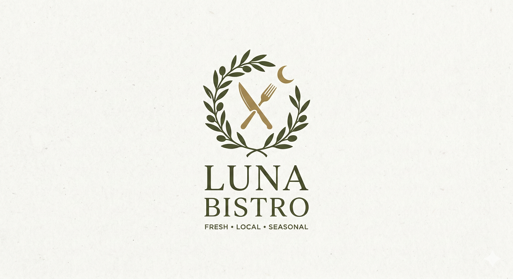
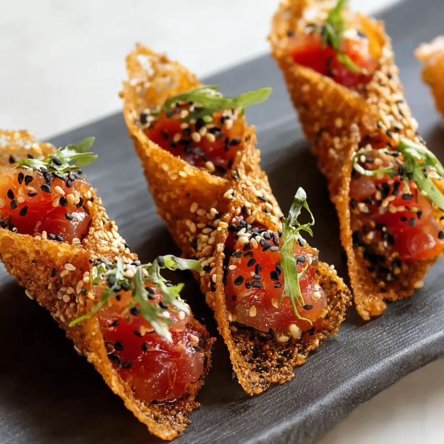
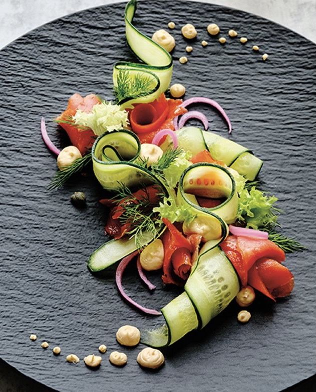
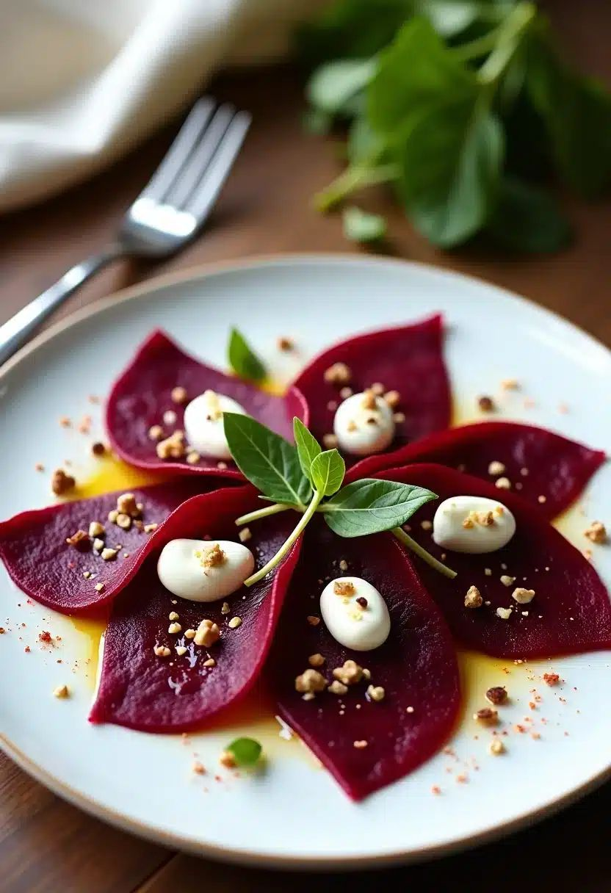
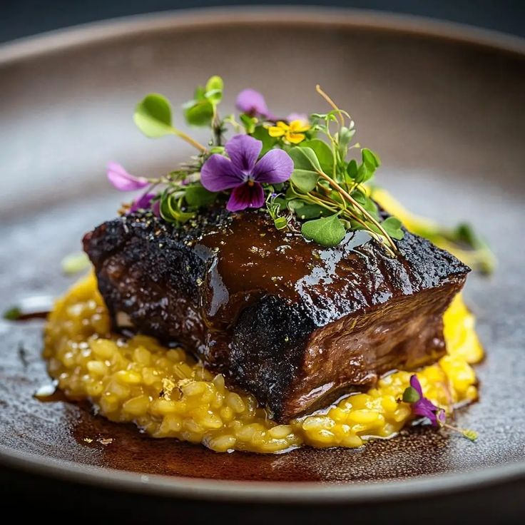
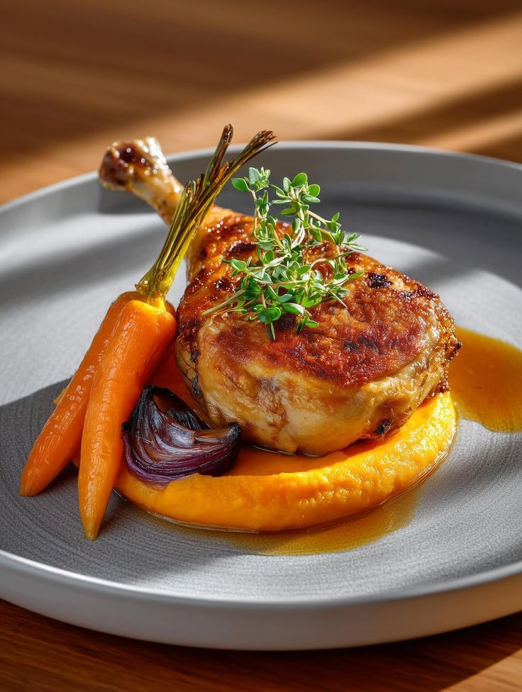
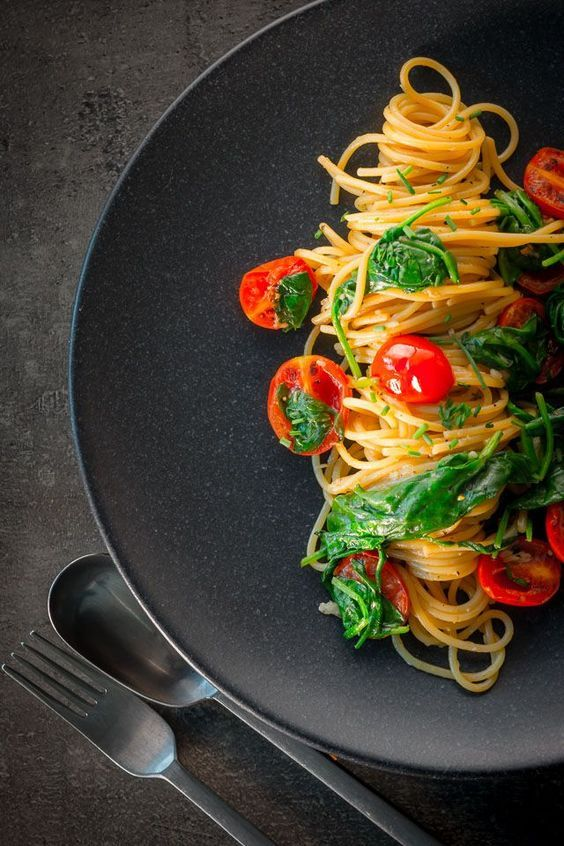
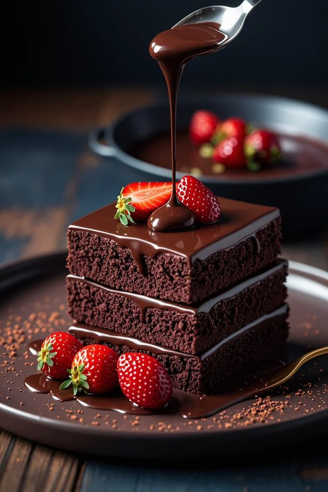
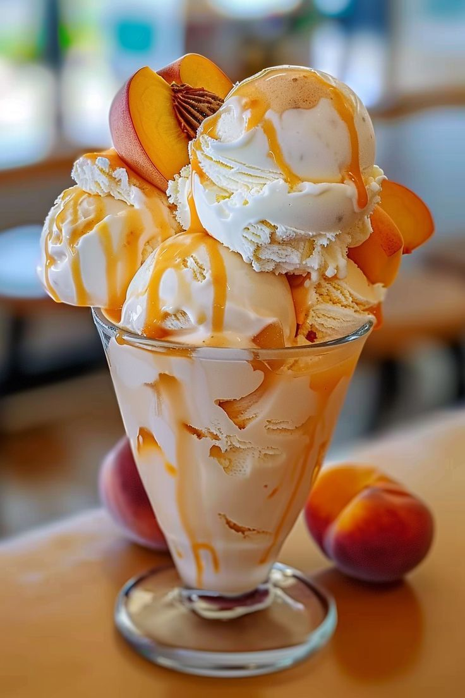

Menu
Entradas
Tacos de salmón

Tacos de salmón a la parrilla con salsa de aguacate y ensalada fresca.
Ensalada fria de salmón

Una fresca ensalada de salmón con ingredientes refrescantes y una deliciosa salsa.
Flor roja

Una deliciosa flor de beterraga con una capa cremosa y un sabor intenso.
Platos principales
Filete de res a la parrilla

Un jugoso filete de res a la parrilla servido con una salsa especial y guarnición de vegetales.
Pollo al curry

Un plato de pollo al curry con una mezcla de especias aromáticas y servido con puré de zanahoria.
Pasta primavera

Una deliciosa pasta primavera con una variedad de verduras frescas y una salsa ligera.
Postres
Cheesecake de frutos rojos

Un delicioso cheesecake con una base crujiente y una capa cremosa de queso, cubierto con una mezcla de frutos rojos frescos.
Tarta de chocolate

Una tarta de chocolate rica y decadente, con una base de galleta y una capa suave de chocolate, perfecta para los amantes del chocolate.
Helado artesanal

Un helado artesanal hecho con ingredientes naturales, disponible en una variedad de sabores deliciosos para satisfacer todos los gustos.